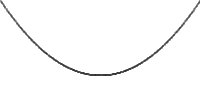

PathQuad
Defines a quadratic Bezier curve with a control point More...
Properties
- controlX : real
- controlY : real
- relativeControlX : real
- relativeControlY : real
- relativeX : real
- relativeY : real
- x : real
- y : real
Detailed Description
The following QML produces the path shown below:
 | Path { startX: 0; startY: 0 PathQuad { x: 200; y: 0; controlX: 100; controlY: 150 } } |
See also Path, PathCubic, PathLine, PathArc, PathCurve, and PathSvg.
Property Documentation
Defines the position of the control point relative to the curve's start.
If both a relative and absolute control position are specified for a single axis, the relative position will be used.
Relative and absolute positions can be mixed, for example it is valid to set a relative control x and an absolute control y.